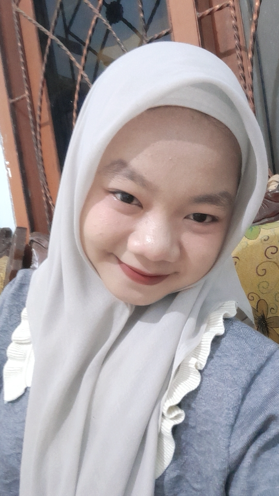

Web Development
Mengenal dasar HTML, CSS, dan JavaScript untuk membangun halaman web.
PORTOFOLIO PELAJAR · 2025/2026
Halo! Saya Jessyca Dyah Maharani, siswi kelas XI RPL 1 di SMKN 8 Jember yang sedang belajar dan mengembangkan kemampuan di bidang teknologi, pemrograman, dan pengembangan website.

01 / TENTANG SAYA
Saya adalah siswi yang tertarik dengan cara teknologi bisa mengubah ide sederhana menjadi sesuatu yang bermanfaat.
Saat ini saya menempuh pendidikan di SMKN 8 Jember, jurusan Rekayasa Perangkat Lunak. Saya senang mengeksplorasi pemrograman dan desain website, sambil terus belajar dari setiap proses dan projek baru.
02 / KEAHLIAN
Beberapa hal yang sedang saya pelajari dan kembangkan selama perjalanan di RPL.
Mengenal dasar HTML, CSS, dan JavaScript untuk membangun halaman web.
Belajar menyusun tampilan yang nyaman dilihat, rapi, dan mudah digunakan.
Melatih cara berpikir terstruktur dan mengubah masalah menjadi langkah kecil.
03 / PROJEK
Setiap projek dimulai dari rasa ingin tahu. Bagian ini bisa diisi dengan karya yang kamu buat di sekolah.
Ganti bagian ini dengan deskripsi projek yang sudah kamu buat.
Tambahkan projek lain di sini saat sudah siap dibagikan.
04 / DESAIN
Portofolio ini memakai ruang yang lega, warna netral dengan sentuhan lavender, dan tipografi yang mudah dibaca. Detailnya dibuat sederhana agar fokus tetap pada cerita dan karya.
05 / KONTAK
Saya senang bertemu teman baru, berbagi ide, dan belajar bersama. Hubungi saya melalui kontak yang akan saya tambahkan di sini.
Kontak akan segera ditambahkan